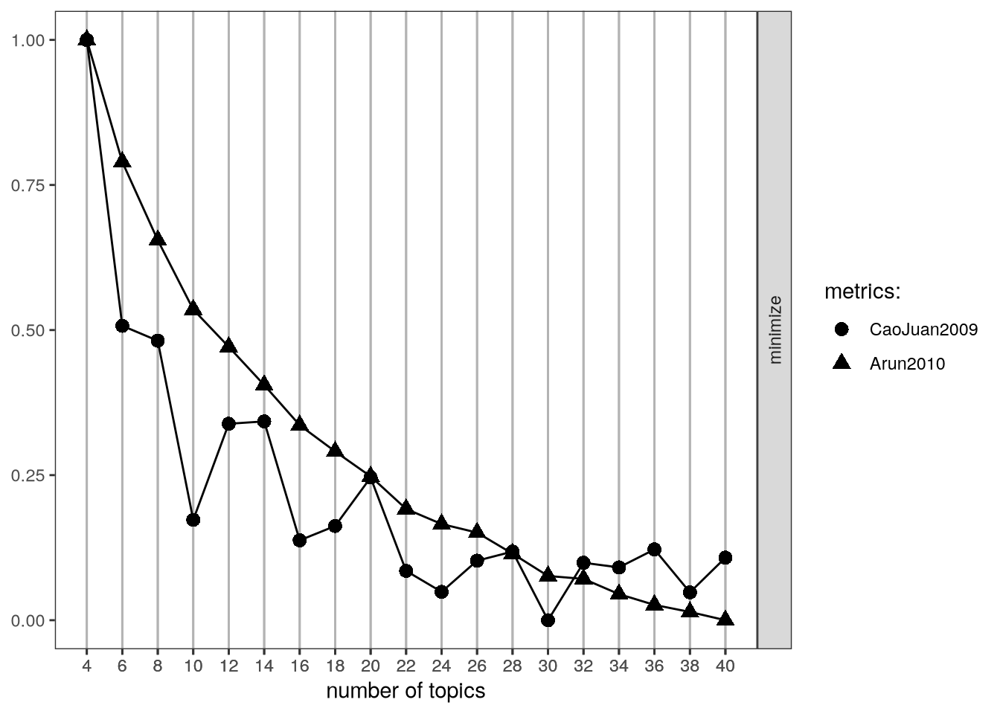

library(NLP)
library(tm)
library(SnowballC)
library(topicmodels)
library(ldatuning)Cultural Structures
For our empirical case, we analyze textual data based on a set of sociology abstracts (drawn from recent dissertations). We are interested in discovering the latent topics that exist in the data, where each topic is defined by having a distinct pattern of words associated with it. We are also interested in seeing which abstracts get placed together and why. In this way we are trying to uncover the underlying structure of the field of sociology (as represented in abstracts), where certain words and researchers are associated with a topic and certain topics are closer to each other than others. We thus see the intuition of a network approach played out using textual data.
Preparation
A subset of the data
url1 <- "https://github.com/JeffreyAlanSmith/Integrated_Network_Science/raw/master/data/sociologysample.csv"
abstracts <- read.csv(file = url1, stringsAsFactors = FALSE)
str(abstracts)'data.frame': 199 obs. of 2 variables:
$ obs : int 39628 39745 49780 18794 17548 6848 34226 12683 1170 34437 ...
$ text: chr "Ontogenic variables, such as the experience of the parent's abuse as a child and current_depression or substanc"| __truncated__ "This study_analyzes attitudes of area residents toward mineral_extraction and processing in the Northern Great_"| __truncated__ "This dissertation is an experiment in thinking with the story, not about the story in order to erase_the_bounda"| __truncated__ "The concepts of parent_empowerment and participation, currently popular in the disability field, that emerge fr"| __truncated__ ...abstracts[1, "text"][1] "Ontogenic variables, such as the experience of the parent's abuse as a child and current_depression or substance abuse, were expected_to_have_a_greater_impact on the risk of child_abuse than microsystem and exosystem_variables such as family functioning, domestic violence, income, community safety, and social support. It was expected that social_support would have the greatest_impact of these broader system variables. It is believed that attachment_style_mediates the relationship between the ontogenic system level and microsystem/exosystem level variables. Secondary data were used to examine these systemic impacts. The dataset was obtained from the National_Data_Archive on Child Abuse and Neglect. The sample_consisted of 265 women, the majority of whom were African-American and who had a high_school_education or GED. The majority of these women were employed, while others were in school or a training_program at the time of the interview. Over 50 percent_of_the_sample had never been married. A multiple_regression_analysis_was_conducted_to_examine_the_impact of factors from three systems levels on the risk of child abuse. Variables were entered into the multiple_regression equation after they had demonstrated significance in bi-variate analyses with Bonferroni corrections. Mother's age was entered first in this equation in order to control for any potential effect of this variable as it has been shown_to_be_significantly_related_to_risk of abuse. Entered in the second step were the ontogenic variables found to be significant: depression and locus of control. In the third and final step, the microsystem and exosystem_variables found_to_have_a_significant_impact on the risk of abuse were entered: the number of social supports available to the mother, the mother's assessment_of_family_functioning and the frequency of domestic_violence perpetrated against her. Locus of control and mother's depression were demonstrated to be the most important predictors in the equation. Domestic violence_and_social_support were the next most important predictors, with family_functioning becoming non-significant in this equation. This supports the hypothesis that ontogenic variables have the greater_impact in predicting risk of physical abuse. A path_analysis_was_conducted_in_order_to_examine the possible time order and causal_nature of these variables. All variables were included in this analysis. The only variables found to impact the risk of physical_abuse were depression and locus of control. The only route from experiencing childhood_sexual_abuse to the risk of committing child_physical_abuse was through the level of depression currently being experienced by the mother. Mother's locus_of_control impacted the risk of abuse directly as well as through its impact on depression. Risk of abuse was not influenced directly by the experience_of_sexual abuse."Transform the raw text data into Corpuses.
abstracts_corp <- tm::Corpus(tm::VectorSource(abstracts$text))
length(abstracts_corp)[1] 199One per abstract.
Make everything lower case
abstracts_corp <- tm_map(abstracts_corp, tolower)Warning in tm_map.SimpleCorpus(abstracts_corp, tolower): transformation drops
documentsabstracts_corp[[1]]$content[1] "ontogenic variables, such as the experience of the parent's abuse as a child and current_depression or substance abuse, were expected_to_have_a_greater_impact on the risk of child_abuse than microsystem and exosystem_variables such as family functioning, domestic violence, income, community safety, and social support. it was expected that social_support would have the greatest_impact of these broader system variables. it is believed that attachment_style_mediates the relationship between the ontogenic system level and microsystem/exosystem level variables. secondary data were used to examine these systemic impacts. the dataset was obtained from the national_data_archive on child abuse and neglect. the sample_consisted of 265 women, the majority of whom were african-american and who had a high_school_education or ged. the majority of these women were employed, while others were in school or a training_program at the time of the interview. over 50 percent_of_the_sample had never been married. a multiple_regression_analysis_was_conducted_to_examine_the_impact of factors from three systems levels on the risk of child abuse. variables were entered into the multiple_regression equation after they had demonstrated significance in bi-variate analyses with bonferroni corrections. mother's age was entered first in this equation in order to control for any potential effect of this variable as it has been shown_to_be_significantly_related_to_risk of abuse. entered in the second step were the ontogenic variables found to be significant: depression and locus of control. in the third and final step, the microsystem and exosystem_variables found_to_have_a_significant_impact on the risk of abuse were entered: the number of social supports available to the mother, the mother's assessment_of_family_functioning and the frequency of domestic_violence perpetrated against her. locus of control and mother's depression were demonstrated to be the most important predictors in the equation. domestic violence_and_social_support were the next most important predictors, with family_functioning becoming non-significant in this equation. this supports the hypothesis that ontogenic variables have the greater_impact in predicting risk of physical abuse. a path_analysis_was_conducted_in_order_to_examine the possible time order and causal_nature of these variables. all variables were included in this analysis. the only variables found to impact the risk of physical_abuse were depression and locus of control. the only route from experiencing childhood_sexual_abuse to the risk of committing child_physical_abuse was through the level of depression currently being experienced by the mother. mother's locus_of_control impacted the risk of abuse directly as well as through its impact on depression. risk of abuse was not influenced directly by the experience_of_sexual abuse."Some words are combined with “_“.
split_words_us <- function(x, pattern) gsub(pattern, replacement = " ", x)
split_words <- content_transformer(split_words_us)
abstracts_corp <- tm_map(abstracts_corp, split_words, pattern = "_")Warning in tm_map.SimpleCorpus(abstracts_corp, split_words, pattern = "_"):
transformation drops documentsabstracts_corp <- tm_map(abstracts_corp, split_words, pattern = "/")Warning in tm_map.SimpleCorpus(abstracts_corp, split_words, pattern = "/"):
transformation drops documentsabstracts_corp[[1]]$content[1] "ontogenic variables, such as the experience of the parent's abuse as a child and current depression or substance abuse, were expected to have a greater impact on the risk of child abuse than microsystem and exosystem variables such as family functioning, domestic violence, income, community safety, and social support. it was expected that social support would have the greatest impact of these broader system variables. it is believed that attachment style mediates the relationship between the ontogenic system level and microsystem exosystem level variables. secondary data were used to examine these systemic impacts. the dataset was obtained from the national data archive on child abuse and neglect. the sample consisted of 265 women, the majority of whom were african-american and who had a high school education or ged. the majority of these women were employed, while others were in school or a training program at the time of the interview. over 50 percent of the sample had never been married. a multiple regression analysis was conducted to examine the impact of factors from three systems levels on the risk of child abuse. variables were entered into the multiple regression equation after they had demonstrated significance in bi-variate analyses with bonferroni corrections. mother's age was entered first in this equation in order to control for any potential effect of this variable as it has been shown to be significantly related to risk of abuse. entered in the second step were the ontogenic variables found to be significant: depression and locus of control. in the third and final step, the microsystem and exosystem variables found to have a significant impact on the risk of abuse were entered: the number of social supports available to the mother, the mother's assessment of family functioning and the frequency of domestic violence perpetrated against her. locus of control and mother's depression were demonstrated to be the most important predictors in the equation. domestic violence and social support were the next most important predictors, with family functioning becoming non-significant in this equation. this supports the hypothesis that ontogenic variables have the greater impact in predicting risk of physical abuse. a path analysis was conducted in order to examine the possible time order and causal nature of these variables. all variables were included in this analysis. the only variables found to impact the risk of physical abuse were depression and locus of control. the only route from experiencing childhood sexual abuse to the risk of committing child physical abuse was through the level of depression currently being experienced by the mother. mother's locus of control impacted the risk of abuse directly as well as through its impact on depression. risk of abuse was not influenced directly by the experience of sexual abuse."Remove punctuation
abstracts_corp <- tm_map(abstracts_corp, removePunctuation)Warning in tm_map.SimpleCorpus(abstracts_corp, removePunctuation):
transformation drops documentsRemove numbers
abstracts_corp <- tm_map(abstracts_corp, removeNumbers)Warning in tm_map.SimpleCorpus(abstracts_corp, removeNumbers): transformation
drops documentsRemove commonly used grammatical words
stopwords("english") [1] "i" "me" "my" "myself" "we"
[6] "our" "ours" "ourselves" "you" "your"
[11] "yours" "yourself" "yourselves" "he" "him"
[16] "his" "himself" "she" "her" "hers"
[21] "herself" "it" "its" "itself" "they"
[26] "them" "their" "theirs" "themselves" "what"
[31] "which" "who" "whom" "this" "that"
[36] "these" "those" "am" "is" "are"
[41] "was" "were" "be" "been" "being"
[46] "have" "has" "had" "having" "do"
[51] "does" "did" "doing" "would" "should"
[56] "could" "ought" "i'm" "you're" "he's"
[61] "she's" "it's" "we're" "they're" "i've"
[66] "you've" "we've" "they've" "i'd" "you'd"
[71] "he'd" "she'd" "we'd" "they'd" "i'll"
[76] "you'll" "he'll" "she'll" "we'll" "they'll"
[81] "isn't" "aren't" "wasn't" "weren't" "hasn't"
[86] "haven't" "hadn't" "doesn't" "don't" "didn't"
[91] "won't" "wouldn't" "shan't" "shouldn't" "can't"
[96] "cannot" "couldn't" "mustn't" "let's" "that's"
[101] "who's" "what's" "here's" "there's" "when's"
[106] "where's" "why's" "how's" "a" "an"
[111] "the" "and" "but" "if" "or"
[116] "because" "as" "until" "while" "of"
[121] "at" "by" "for" "with" "about"
[126] "against" "between" "into" "through" "during"
[131] "before" "after" "above" "below" "to"
[136] "from" "up" "down" "in" "out"
[141] "on" "off" "over" "under" "again"
[146] "further" "then" "once" "here" "there"
[151] "when" "where" "why" "how" "all"
[156] "any" "both" "each" "few" "more"
[161] "most" "other" "some" "such" "no"
[166] "nor" "not" "only" "own" "same"
[171] "so" "than" "too" "very" abstracts_corp <- tm_map(abstracts_corp, removeWords, stopwords("english"))Warning in tm_map.SimpleCorpus(abstracts_corp, removeWords,
stopwords("english")): transformation drops documentsNow, let’s add a few more words to our stopword list. Again, we want to remove words that are not differentiating for the corpus at hand (here abstracts from sociology dissertations). We will add the following words that were not in the default stop list.
myStopwords <- c(
"dissertation", "chapter", "chapters", "research",
"researcher", "researchers", "study", "studies",
"studied", "studys", "studying", "one", "two", "three"
)
abstracts_corp <- tm_map(abstracts_corp, removeWords, myStopwords)Warning in tm_map.SimpleCorpus(abstracts_corp, removeWords, myStopwords):
transformation drops documentsRemove whitespace
abstracts_corp <- tm_map(abstracts_corp, stripWhitespace)Warning in tm_map.SimpleCorpus(abstracts_corp, stripWhitespace): transformation
drops documentsReduce to stem-words
abstracts_corp <- tm_map(abstracts_corp, stemDocument)Warning in tm_map.SimpleCorpus(abstracts_corp, stemDocument): transformation
drops documentsabstracts_corp[[1]]$content[1] "ontogen variabl experi parent abus child current depress substanc abus expect greater impact risk child abus microsystem exosystem variabl famili function domest violenc incom communiti safeti social support expect social support greatest impact broader system variabl believ attach style mediat relationship ontogen system level microsystem exosystem level variabl secondari data use examin system impact dataset obtain nation data archiv child abus neglect sampl consist women major africanamerican high school educ ged major women employ other school train program time interview percent sampl never marri multipl regress analysi conduct examin impact factor system level risk child abus variabl enter multipl regress equat demonstr signific bivari analys bonferroni correct mother age enter first equat order control potenti effect variabl shown signific relat risk abus enter second step ontogen variabl found signific depress locus control third final step microsystem exosystem variabl found signific impact risk abus enter number social support avail mother mother assess famili function frequenc domest violenc perpetr locus control mother depress demonstr import predictor equat domest violenc social support next import predictor famili function becom nonsignific equat support hypothesi ontogen variabl greater impact predict risk physic abus path analysi conduct order examin possibl time order causal natur variabl variabl includ analysi variabl found impact risk physic abus depress locus control rout experienc childhood sexual abus risk commit child physic abus level depress current experienc mother mother locus control impact risk abus direct well impact depress risk abus influenc direct experi sexual abus"full pipeline
split_words_us <- function(x, pattern) gsub(pattern, replacement = " ", x)
split_words <- content_transformer(split_words_us)
myStopwords <- c(
"dissertation", "chapter", "chapters", "research",
"researcher", "researchers", "study", "studies",
"studied", "studys", "studying", "one", "two", "three"
)
abstracts_corp <- Corpus(VectorSource(abstracts$text)) |>
tm_map(tolower) |>
tm_map(split_words, pattern = "_") |>
tm_map(split_words, pattern = "/") |>
tm_map(removePunctuation) |>
tm_map(removeNumbers) |>
tm_map(removeWords, stopwords("english")) |>
tm_map(removeWords, myStopwords) |>
tm_map(stripWhitespace) |>
tm_map(stemDocument)abstracts_corp[[1]]$content[1] "ontogen variabl experi parent abus child current depress substanc abus expect greater impact risk child abus microsystem exosystem variabl famili function domest violenc incom communiti safeti social support expect social support greatest impact broader system variabl believ attach style mediat relationship ontogen system level microsystem exosystem level variabl secondari data use examin system impact dataset obtain nation data archiv child abus neglect sampl consist women major africanamerican high school educ ged major women employ other school train program time interview percent sampl never marri multipl regress analysi conduct examin impact factor system level risk child abus variabl enter multipl regress equat demonstr signific bivari analys bonferroni correct mother age enter first equat order control potenti effect variabl shown signific relat risk abus enter second step ontogen variabl found signific depress locus control third final step microsystem exosystem variabl found signific impact risk abus enter number social support avail mother mother assess famili function frequenc domest violenc perpetr locus control mother depress demonstr import predictor equat domest violenc social support next import predictor famili function becom nonsignific equat support hypothesi ontogen variabl greater impact predict risk physic abus path analysi conduct order examin possibl time order causal natur variabl variabl includ analysi variabl found impact risk physic abus depress locus control rout experienc childhood sexual abus risk commit child physic abus level depress current experienc mother mother locus control impact risk abus direct well impact depress risk abus influenc direct experi sexual abus"Create a document-term matrix
The document-term matrix captures how many times each document used a particular term.
abstracts_dtm <- DocumentTermMatrix(abstracts_corp)
abstracts_dtm<<DocumentTermMatrix (documents: 199, terms: 4298)>>
Non-/sparse entries: 20228/835074
Sparsity : 98%
Maximal term length: 25
Weighting : term frequency (tf)Thus, about 98% of the possible ‘ties’ between documents and terms do not actually exist (835074 / (20228 + 835074)), suggesting that many words are not used widely across abstracts.
inspect(abstracts_dtm[1, ])<<DocumentTermMatrix (documents: 1, terms: 4298)>>
Non-/sparse entries: 114/4184
Sparsity : 97%
Maximal term length: 25
Weighting : term frequency (tf)
Sample :
Terms
Docs abus child control depress enter impact mother risk support variabl
1 14 5 5 6 4 9 6 9 5 12inspect(abstracts_dtm[, "risk"])<<DocumentTermMatrix (documents: 199, terms: 1)>>
Non-/sparse entries: 11/188
Sparsity : 94%
Maximal term length: 4
Weighting : term frequency (tf)
Sample :
Terms
Docs risk
1 9
116 1
117 2
118 1
143 1
173 1
19 1
53 2
63 1
75 1head(Terms(abstracts_dtm))[1] "abus" "africanamerican" "age" "analys"
[5] "analysi" "archiv" mat_abstract_words <- as.matrix(abstracts_dtm)
dim(mat_abstract_words)[1] 199 4298mat_abstract_words[1:5, 1:5] Terms
Docs abus africanamerican age analys analysi
1 14 1 1 1 3
2 0 0 0 0 3
3 1 0 0 0 3
4 0 0 0 0 0
5 0 0 0 1 0Calculate summary measures
sum(mat_abstract_words[1, ] > 0)[1] 114Topic Modeling
We will utilize LDA, latent Dirichlet allocation. LDA attempts to uncover the underlying, or latent, topics in the corpus of interest. Different (latent) topics create different word use and we can use the co-occurrence of words in a document to uncover which words hang together under a given topic. A topic will have a high probability of yielding a set of words when those words are used together at high rates. In a similar way, we can ask which abstracts are likely to fall into which topic, based on their distribution of word choice.
Initial Model
Inputs to the algorithm:
burnin <- 200 # omit iterations at beginning
iter <- 3000 # iterations
thin <- 2000 # omit iterations between kept iterations
seed <- list(2003, 5, 63, 100001, 765)
nstart <- 5 # number of repeated random starts
best <- TRUE # only continue model on best model
k <- 5 # Number of groups (clusters)ldaOut <- LDA(
x = abstracts_dtm, k = k,
method = "Gibbs",
control = list(
nstart = nstart, seed = seed, best = best,
burnin = burnin, iter = iter, thin = thin
)
)
ldaOut_topics <- topics(ldaOut)
head(ldaOut_topics)1 2 3 4 5 6
1 2 5 1 2 5 topicProbabilities <- ldaOut@gamma
head(topicProbabilities) [,1] [,2] [,3] [,4] [,5]
[1,] 0.595890 0.092466 0.14041 0.10616 0.065068
[2,] 0.111111 0.326599 0.20539 0.24242 0.114478
[3,] 0.096234 0.142259 0.15900 0.17155 0.430962
[4,] 0.221477 0.208054 0.16107 0.19463 0.214765
[5,] 0.110345 0.613793 0.10000 0.10000 0.075862
[6,] 0.146444 0.179916 0.17992 0.14226 0.351464The most likely words associated with each latent topic:
ldaOut_terms <- terms(ldaOut, 10)
ldaOut_terms Topic 1 Topic 2 Topic 3 Topic 4 Topic 5
[1,] "parent" "state" "social" "women" "cultur"
[2,] "famili" "polit" "model" "student" "ident"
[3,] "children" "organ" "work" "educ" "social"
[4,] "relationship" "communiti" "use" "particip" "ethnic"
[5,] "behavior" "develop" "interact" "american" "examin"
[6,] "mother" "servic" "theori" "role" "nation"
[7,] "support" "system" "relat" "school" "within"
[8,] "signific" "econom" "develop" "black" "case"
[9,] "child" "polici" "effect" "group" "practic"
[10,] "result" "local" "individu" "experi" "movement"Picking th number of topics
fitmodel <- FindTopicsNumber(
dtm = abstracts_dtm,
topics = seq(4, 40, 2),
metrics = c("CaoJuan2009", "Arun2010"),
method = "Gibbs",
control = list(
nstart = 1, seed = c(30),
best = best, burnin = burnin,
iter = iter, thin = thin
),
mc.cores = 4, verbose = TRUE
)fit models... done.
calculate metrics:
CaoJuan2009... done.
Arun2010... done.fitmodel topics CaoJuan2009 Arun2010
1 40 0.063597 322.22
2 38 0.060160 325.94
3 36 0.064414 329.12
4 34 0.062632 333.99
5 32 0.063091 340.87
6 30 0.057399 342.17
7 28 0.064201 352.24
8 26 0.063296 361.74
9 24 0.060207 365.60
10 22 0.062284 372.41
11 20 0.071537 387.09
12 18 0.066736 398.35
13 16 0.065314 410.20
14 14 0.077096 428.31
15 12 0.076863 445.55
16 10 0.067343 462.38
17 8 0.085085 493.68
18 6 0.086567 528.98
19 4 0.114893 584.03FindTopicsNumber_plot(fitmodel)
k <- 30
ldaOut2 <- LDA(
x = abstracts_dtm, k = k,
method = "Gibbs",
control = list(
nstart = nstart, seed = seed, best = best,
burnin = burnin, iter = iter, thin = thin
)
)
ldaOut_terms2 <- terms(ldaOut2, 10)ldaOut_terms2[, c(2, 14, 20, 23, 24)] Topic 2 Topic 14 Topic 20 Topic 23 Topic 24
[1,] "involv" "japanes" "parent" "women" "program"
[2,] "school" "technolog" "children" "sexual" "use"
[3,] "educ" "resourc" "mother" "men" "data"
[4,] "parent" "right" "child" "gender" "effect"
[5,] "particip" "firm" "famili" "style" "measur"
[6,] "interview" "japan" "relationship" "experi" "influenc"
[7,] "teacher" "arrow" "adjust" "race" "find"
[8,] "scienc" "foreign" "support" "also" "perform"
[9,] "percept" "learn" "age" "famili" "high"
[10,] "learn" "invest" "matern" "factor" "increas" Most topics seem coherent, some are more general like Topic 24.
Network Representation
library(igraph)mat_abstract_words[1:5, 1:5] Terms
Docs abus africanamerican age analys analysi
1 14 1 1 1 3
2 0 0 0 0 3
3 1 0 0 0 3
4 0 0 0 0 0
5 0 0 0 1 0In this case, let’s focus on just a subset of the full matrix. We will look at the network of abstracts and words associated with topic 20 (“family”) and topic 23 (“gender”).
ldaOut_topics2 <- topics(ldaOut2)in_20_23 <- ldaOut_topics2 %in% c(20, 23)
mat_abstract_words_subset <- mat_abstract_words[in_20_23, ]
worduse <- colSums(mat_abstract_words_subset)
mat_abstract_words_subset <- mat_abstract_words_subset[, worduse > 5]
dim(mat_abstract_words_subset)[1] 24 159We will construct a two-mode network, where there are two types of nodes (abstracts and words) and abstracts are connected to words (and vice versa) but there are no direct ties between nodes of the same type.
abstract_word_net <-
graph_from_biadjacency_matrix(mat_abstract_words_subset,
mode = "all", weighted = T
)type <- vertex_attr(abstract_word_net, "type")
table(type)type
FALSE TRUE
24 159 24 abstracts and 159 words.
V(abstract_word_net)$color[type == TRUE] <- rgb(0, 1, 0, .2)in20 <- names(which(ldaOut_topics2 == 20))
in23 <- names(which(ldaOut_topics2 == 23))which_topic20 <- V(abstract_word_net)$name %in% in20
V(abstract_word_net)$color[which_topic20] <- rgb(0, 0, 1, .2)
which_topic23 <- V(abstract_word_net)$name %in% in23
V(abstract_word_net)$color[which_topic23] <- rgb(1, 0, 0, .2)V(abstract_word_net)$label <- V(abstract_word_net)$name
V(abstract_word_net)$label.color <- rgb(0, 0, .2, .85)
V(abstract_word_net)$label.cex <- .75
V(abstract_word_net)$size <- 3
V(abstract_word_net)$frame.color <- V(abstract_word_net)$color
E(abstract_word_net)$color <- rgb(.5, .5, .5, .04)set.seed(106)
svglite::svglite("images/abstract_word_net.svg")
plot(abstract_word_net, layout = layout_with_fr)
dev.off()png
2